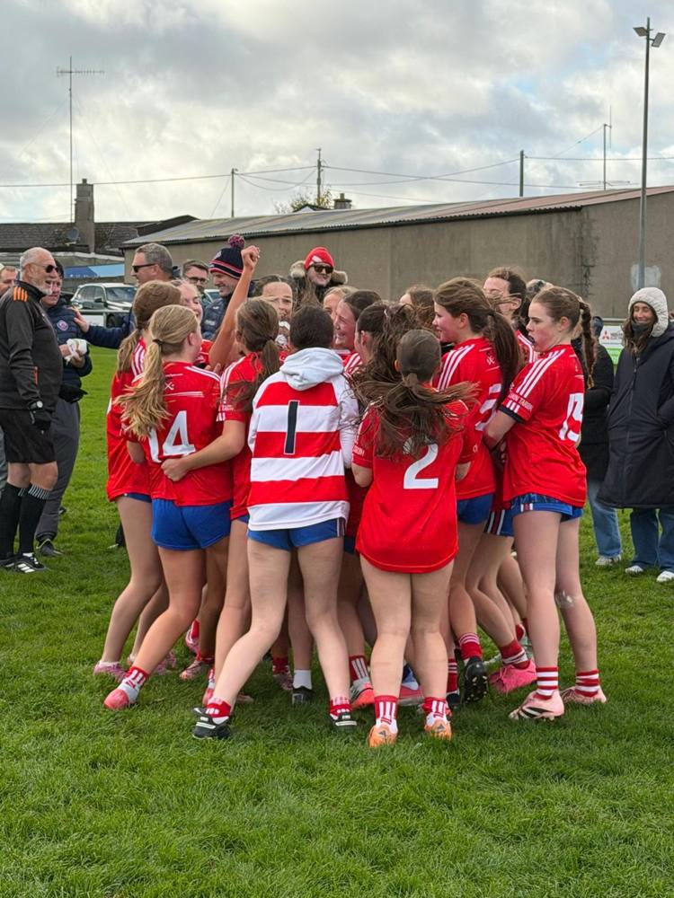
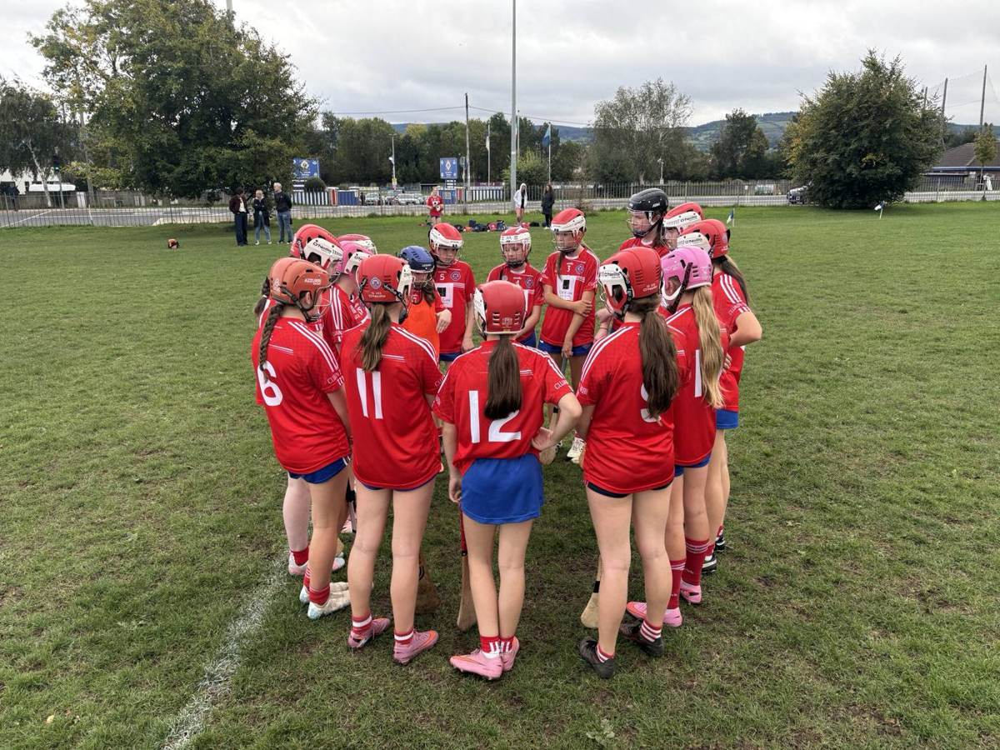

Good food, plenty to drink and a proper night's sleep give you the energy to train hard, play your best and enjoy every minute of the road to Féile. This is your guide from now until the big weekend in April.

The simple stuff that makes the biggest difference.
Food gives you the energy to run, jump, strike and tackle. You play two codes, so you need plenty of it, every day.
Some foods are great for training and recovery. Treats are a normal, fun part of life too, especially at Christmas and after a big win.
Three meals and two or three snacks a day, every day. That rhythm is the single biggest win.
Everyone grows and trains differently, so everyone's needs are different. Eat for your own energy, and if you're hungry, eat.
Ask at home to help with the shopping list or cook a dinner from this page. Families who eat together fuel together.
You get stronger while you sleep. Aim for about 9 hours, and leave the phone outside the bedroom.
Four parts, every main meal. Bigger training day? Add a bit extra.
Carbohydrate is your main fuel for running, sprinting and skills.
Protein helps your muscles recover and get stronger after training.
Fruit and veg give you vitamins and help you stay well all winter.
Calcium builds strong bones, and your teenage years are when it matters most.
Iron carries oxygen to your muscles so you can keep going. Find it in red meat a couple of times a week, chicken, eggs, beans, lentils, fortified cereals and green veg. A glass of orange juice or some peppers with the meal helps you soak it up.
Have 3 to 4 a day. A glass of milk, a yoghurt pot, or a matchbox-sized piece of cheese each count as one.
The Irish sun is too weak from October to March. Ask at home about a daily vitamin D supplement for the winter. It's standard advice for everyone in Ireland.
Water helps your first touch, your decisions and your speed.
Bring your own named bottle (about 750 ml) to every session and match, and keep it with you at school.
Sip regularly, about 6 to 8 cups on normal days and more on training days. Milk counts too.
A glass of water in the 2 hours before training, then a few mouthfuls at every water break.
Keep sipping until your pee is pale yellow again. It's the simplest check there is.
Cold weather hides thirst. You still need to drink in December and January, even when you don't feel like it.
Water is all you need for a normal session. For long tournament days, diluted squash with a pinch of salt does the same job as a sports drink.
Most of our sessions are in the evening, so this assumes a 6 or 7pm start.
A sandwich or wrap with chicken, tuna, egg or cheese, plus fruit and a yoghurt.
Beans or scrambled egg on toast, a bowl of cereal with milk, leftover pasta, or a bagel with peanut butter and banana.
A banana, a handful of raisins, a cereal bar, or rice cakes with jam.
Nothing else needed for a normal 60 to 90 minute session.
A glass of milk (chocolate milk is perfect), a yoghurt and a banana, or a cheese sandwich.
A normal family dinner with plenty of potatoes, rice or pasta, plus meat, fish, eggs or beans, and veg. Late dinner after a 7pm session? Still have it. That's when your best recovery happens.
Weekends and holidays: a light breakfast such as toast with honey or a small bowl of cereal 60 to 90 minutes before, then a proper breakfast afterwards.
Have a snack beforehand and a milk or yoghurt after, just like a team session.
Familiar food, steady drinking, and nothing new on the day.

Féile can mean two or three games in a day with waits in between. The aim is to stay topped up and feel light and ready.
Drinks plus something small and quick: half a banana, a few jellies, dried apricots or a small cereal bar.
A small snack: a scone or bagel with jam, a ham or cheese sandwich, a yoghurt drink, a banana.
A light meal: a wrap or sandwich, pasta salad or a rice pot, plus fruit.
Nerves are normal. If food is hard to face, drinks like milk, smoothies or yoghurt drinks are easier and still give you fuel.
Save the chipper, spicy food and big treats for after the last game of the day. Then enjoy them with the team.
A big pasta or rice dinner, plenty to drink, and an early night means you're ready to go again on day two.
Enjoy every bit of it, and come back in January full of energy.
Selection boxes, Christmas dinner and parties are all part of the fun. Over the break, just keep your meals coming and keep moving, so you're ready to fly when team training restarts.
Late nights and lie-ins make it easy to miss. A late breakfast is still breakfast.
Enjoy treats alongside or after your proper meals, and you'll keep your energy up all holiday.
Turkey and ham sandwiches, turkey curry with rice and leftover spuds are brilliant fuel after a home session or a Christmas walk.
Central heating dries you out, so keep sipping water through the holidays.
The home programme keeps your legs ready while pitches are closed. A snack before, and milk or yoghurt after.
A Stephen's Day or New Year's Day walk or run is a great tradition to start.
Ordinary family food at the right times. Swap in whatever you like at home.
Tick them off on your phone, or print it for the fridge.
How we talk about food, and when to check in.
If a player seems tired all the time, keeps picking up knocks, seems to be skipping meals, or seems worried or upset around food, have a quiet, kind word with her parents early. A GP is the right first stop, and earlier support always helps. Bodywhys also supports families in Ireland.